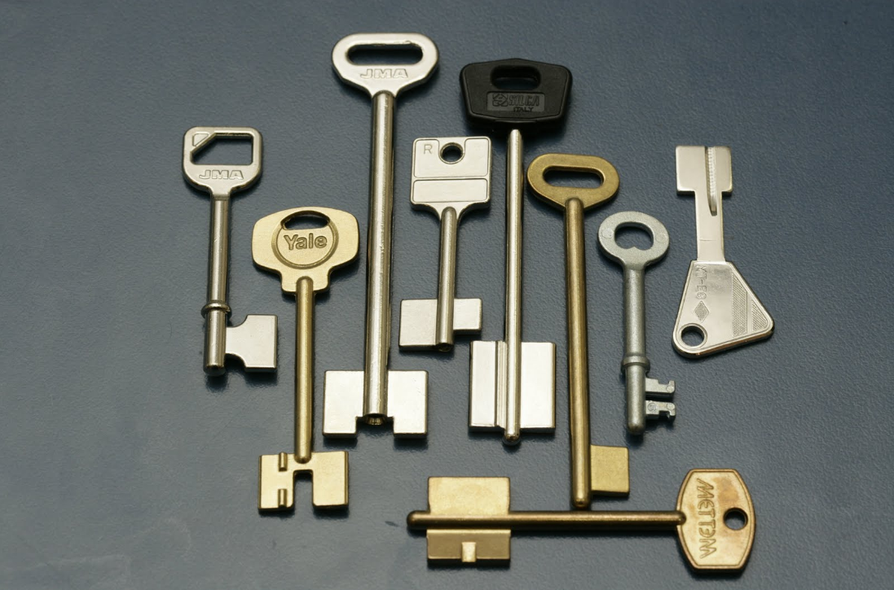
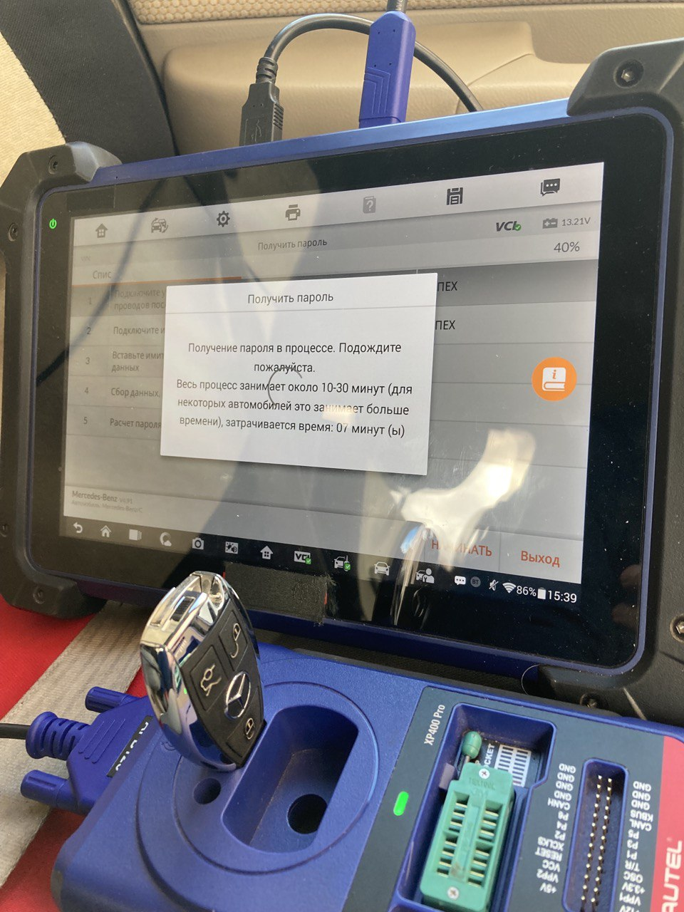
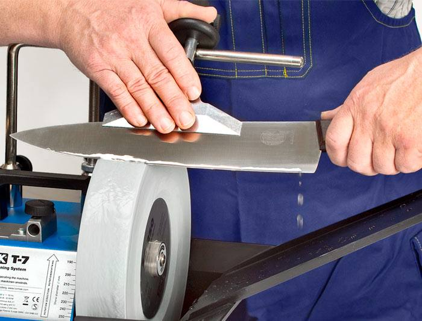
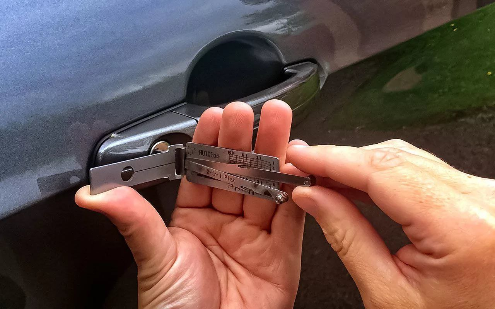
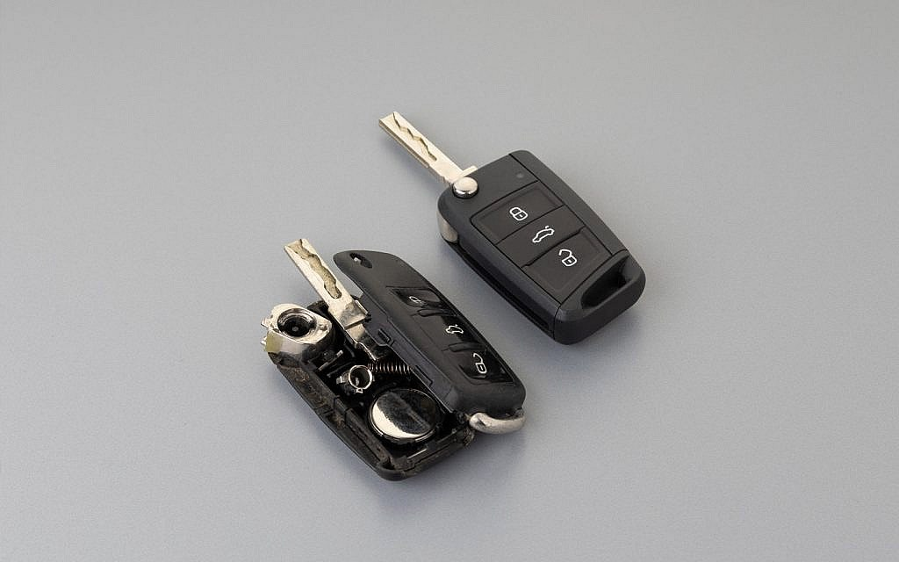

Изготовление ключей
для любого замка
Мы изготавливаем ключи для автомобилей, квартир, офисов, сейфов и других замков. Современное оборудование гарантирует точность и долговечность.
Мы предоставляем полный спектр услуг: от изготовления ключей до аварийного вскрытия замков.
Все работы выполняются быстро и профессионально, с гарантией качества!

Мы изготавливаем ключи для автомобилей, квартир, офисов, сейфов и других замков. Современное оборудование гарантирует точность и долговечность.

Профессиональный ремонт замков, восстановление утраченной функциональности ключей, а также ремонт сломанных чип-ключей для автомобилей.

Изготовление и настройка чип-ключей для автомобилей, включая настройку для иммобилайзеров и ремонт электронных модулей.

Высококачественная заточка ножей, ножниц, инструментов для бытовых и профессиональных нужд. Четкость и долговечность заточки гарантированы.

Безопасное вскрытие автомобилей и квартир без повреждения замков. Оперативная помощь в любой ситуации!

Профессиональная замена поврежденных корпусов и микрокнопок на автоключах. Вернем вашему ключу презентабельный вид и функциональность.
Свяжитесь с нами или посетите нашу мастерскую
г. Слоним
+375 (29) 123-45-67
info@key-service.by